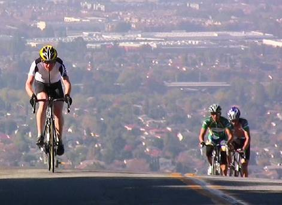

Week 8 Results: Sierra Road
17 Nov 2007
|
2007 Low-Key Hillclimbs Week 8 Results: Sierra Road 17 Nov 2007 |
|  |
| Tim Clark leads Ted Huang and Chris Isley on Sierra Road (Ron Brunner) |
Following in the tire prints of the Tour of California, and previewing the final climb in stage 3 of the 2008 Tour, the Low-Key Hillclimbs saw a record 105 rider turn-out for week 8 of the series, confronting the steep grades of the legendary Sierra Road. And, as is typical, they were rewarded with crystal-clear skies and warm air for the effort.
At the front of the field, hybrid-electric division leader Bill Bushnell rode a Floyd Landis-like pace up the mountain, reaching the summit in an impressive time of 18:58, an average speed of 11.7 mph (7.3 kph) on the 9.34% average grade.
In the women's division, 2006 World Championship time trial bronze medalist Christine Thorburn scored a series record 151.2 points as she distanced herself from rest. However, second-place Lucia Mokres also had an excellent ride, scoring a remarkable 137.3 points in her bid for the overall series lead. Indeed, it's down to the wire between her and Janet Martinez, who was third on the climb today.
But a truly amazing battle took place in the men's division. After a truly blistering pack start, in which your humble reporter found himself going well over his preferred sustained power just sitting in the back half of the pack, series leader Tim Clark was driving the insanity from the head of the field. But with the help of 2006 NCNCA road champion Ted Huang, it was Chris Isley of Webcor/Alto Velo who prevailed, with Ted Huang coming in for a well-deserved third, having given up his chances helping the winner.
On the team front, it was LGBRC taking the top points just ahead of Webcor/Alto Velo. Series leader Bike Trip took third place on the day, just barely holding on to its top overall position. It's all coming down to Hamilton...
And we have an exciting finish, as well, to the endurance competition. Pete Jollymour has less than 15 minutes on Murali Krishnan, who missed a week. But a lot can happen on the long grind up Hamilton.
Thanks to coordinator Judy Colwell, with help from Marie Borselle, Ron Brunner, Bill Bushnell, Janet Griffin, Becky Hill, Kim Hill, Shelly Hill, Howard Kveck, Marianne Lipanovich, Dick Robinson, and Roxanne Robinson for making today's climb possible!median time = 18:58
pl # rider team category time mph fph score 1 244 Bill Bushnell TNT Hybrid 18:58 11.70 5773 100.00
median time = 29:47
pl # rider team category time mph fph score 1 364 Chris Isley Webcor/Alto Velo 4 22:26 9.90 4881 132.76 2 210 Tim Clark Red Dragon 35+ 22:27 9.89 4878 132.67 3 429 Ted Huang Webcor Builders 1 23:11 9.58 4723 128.47 4 141 Carl A. Nielson Pegasus 45+ 23:28 9.46 4666 126.92 5 54 Justin Lucke Google Vegan 24:23 9.10 4491 122.15 6 217 Thomas Novikoff Cambio 2 24:38 9.01 4445 120.91 7 74 Dominic Giampaolo Webcor/Alto Velo 24:54 8.92 4398 119.61 8 81 Ramon Alarcon San Jose Bike Club 35+ 25:05 8.85 4365 118.74 9 328 Mark Edwards Bike Trip 45+ 25:07 8.84 4360 118.58 10 352 Geoff Drake Bike Trip 45+ 25:07 8.84 4360 118.58 11 17 Brian Edwards Hell Riders 25-29 25:15 8.79 4337 117.95 12 1 Dan Connelly TNT 3 25:20 8.76 4322 117.57 13 97 Greg McQuaid Western Wheelers 35+ 25:26 8.73 4305 117.10 14 213 Tom Gardin 35+ 25:31 8.70 4291 116.72 15 142 Rich Hill LGBRC 40+ 25:52 8.58 4233 115.14 16 309 Dan Hicklin LGBRC 4 26:23 8.41 4150 112.89 17 335 Jim Langley Bike Trip 50+ 26:26 8.40 4142 112.67 18 411 James Badia Webcor/Alto Velo 26:49 8.28 4083 111.06 19 277 DJ Novotney 30+ 26:51 8.27 4078 110.92 20 48 David Kelly Webcor/Alto Velo 30+ 26:52 8.26 4076 110.86 21 417 Peter Cazalet Webcor/Alto Velo 27:02 8.21 4051 110.17 22 400 Lucas Pereira Google 5 27:05 8.20 4043 109.97 23 239 Joerg Heilig Google 35+ 27:05 8.20 4043 109.97 24 122 Michael Gonia Republic of Anaerobia 40+ 27:05 8.20 4043 109.97 25 20 James Porter Western Wheelers Out Of Shape Dads 27:06 8.19 4041 109.90 26 278 Chris Heisterkamp Google Male 27:12 8.16 4026 109.50 27 318 Jeff Botelho TFSF 45+ 27:21 8.12 4004 108.90 28 124 Jeff Farnsworth San Jose Bike Club 50+ 27:33 8.06 3975 108.11 29 323 Scott Martin Bike Trip 50+ 27:34 8.05 3972 108.04 30 250 Ian Sowden 27:35 8.05 3970 107.98 31 344 Harvey Wong Friends of Janet 35+ 27:40 8.02 3958 107.65 32 267 Crist Clark Webcor/Alto Velo 35+ 28:00 7.93 3911 106.37 33 67 Martin Hyland Western Wheelers 50+ 28:07 7.90 3894 105.93 34 307 Christian Paquet Doogie 50+ 28:19 7.84 3867 105.18 35 319 Joe Platin Bike Trip 45+ 28:23 7.82 3858 104.93 36 37 Bill Lloyd Six Fifty 1 28:38 7.75 3824 104.02 37 264 Luke Burton LGBRC 5 28:48 7.71 3802 103.41 38 322 Christopher Bosch Google 5 Wannabee 28:54 7.68 3789 103.06 39 368 Tim Sullivan 40+ 28:58 7.66 3780 102.82 40 392 Bryan Canali 29:11 7.61 3752 102.06 41 233 Rand Hill Apple 35+ 29:14 7.59 3746 101.88 42 237 Bill Preucel Friends of Janet 45+ 29:16 7.59 3741 101.77 43 265 Steven Woo LGBRC 4 29:29 7.53 3714 101.02 44 88 Peter Tapscott AV: Old Guys Finish 50+ 29:45 7.46 3681 100.11 45 283 Dan Talayco Two Wheel Tango 40+ 29:47 7.45 3677 100.00 46 397 Mike Williams Friends of Janet 29:50 7.44 3670 99.83 47 325 Kevin Fetterman Sunburnt DJ 40+ 29:54 7.42 3662 99.61 48 50 Francis Cebedo RoadBikeReview 5 29:58 7.41 3654 99.39 49 280 Patrick Kenny Google 29:58 7.41 3654 99.39 50 29 Dean Larson Team Dino 40+ 30:05 7.38 3640 99.00 51 295 Brian Schmitz Friends of Janet 4 30:15 7.34 3620 98.46 52 301 Michael Wright SRI 50+ 30:17 7.33 3616 98.35 53 329 Eric Hamilton MO-DV 50+ 30:19 7.32 3612 98.24 54 140 Gary Griffin Team Santa Cruz 55+ 30:23 7.31 3604 98.03 55 219 Sean Broeder Silicon Valley Triathlon Club 35+ 30:33 7.27 3584 97.49 56 331 Rob Boyer LGBRC 50+ 30:38 7.25 3575 97.23 57 370 Steve Blair Friends of Janet 50+ 30:41 7.24 3569 97.07 58 229 Michael Czepiel Apple 20-24 30:50 7.20 3551 96.59 59 384 Dan Rohrer Leafy Joe 30:52 7.19 3548 96.49 60 236 Paul Melville Doogie 55+ 30:57 7.17 3538 96.23 61 259 Joshua Hadley Republic of Anaerobia 31:00 7.16 3532 96.08 62 303 Tom Workman STVC 40+ 31:07 7.13 3519 95.72 63 376 Robert Ballard Grizzly Peak Cyclists 31:20 7.09 3495 95.05 64 347 Michael Kirkpatrick SRI 4 31:23 7.07 3489 94.90 65 426 Matt Beebe Webcor/Alto Velo 31:25 7.07 3485 94.80 66 232 Matt Rodnick Recreational 31:53 6.96 3434 93.41 67 345 Derek Mau RoadBikeReview 32:04 6.92 3415 92.88 68 388 Sean Wayman LGBRC 5 32:07 6.91 3409 92.73 69 212 Pete Jollymour 6 32:22 6.86 3383 92.02 70 273 Calvin Do Skinny slow guys 35+ 32:38 6.80 3355 91.27 71 238 Michael Kim 45+ 32:42 6.79 3349 91.08 72 201 Vinay Ravuri Georgia Tech Beginner 32:45 6.78 3344 90.94 73 338 Mark King Fremont Freewheelers 4 32:55 6.74 3327 90.48 74 64 Keith Devlin Western Wheelers 60+ 33:04 6.71 3311 90.07 75 70 Bob Parker AV: Old Guys Finish 50+ 33:50 6.56 3236 88.03T 76 337 Bruce Swanson Leafy Joe 45+ 34:57 6.35 3133 85.22 77 372 Ryan P.C. Gibson Google 34:57 6.35 3133 85.22 78 216 Guy Coté 35+ 35:29 6.26 3086 83.94 79 149 Steve Sprang Apple 30+ 35:37 6.23 3074 83.62 80 225 Bogdan Florea 35+ 35:39 6.23 3072 83.54 81 336 Ed Noskowski Leafy Joe 45+ 36:02 6.16 3039 82.65 82 177 Dan Stober Western Wheelers 55+ 37:01 6.00 2958 80.46 83 390 Dan Siehl Valley Presbyterian Superannuated Biochemist 37:19 5.95 2934 79.81 84 351 Jeff Swan Team Spike 37:42 5.89 2905 79.00 85 49 Adam Tow Blubber Busters Infinity 38:34 5.76 2839 77.23 86 103 Toby Booth Webcor/Alto Velo 30+ 38:48 5.72 2822 76.76 87 231 Murali Krishnan Commuter 35+ 39:39 5.60 2762 75.12 88 407 Jens McNaughton Apple 40:48 5.44 2684 73.00 89 403 Daniel Colbert Webcor/Alto Velo 5 42:56 5.17 2550 69.37 90 380 Fred Butts TNT 65+ 44:19 5.01 2471 67.21 T : tandem score
median time = 39:08
pl # rider team category time mph fph score 1 432 Christine Thorburn Webcor Builders 1 25:53 8.58 4231 151.19 2 270 Lucia Mokres LGBRC 4 28:30 7.79 3842 137.31 3 240 Janet Martinez Friends of Janet 40+ 30:36 7.25 3578 127.89 4 332 Margie Biddick Bike Trip 4 31:40 7.01 3458 123.58 5 256 Alison Chaiken Western Wheelers 40+ 35:17 6.29 3103 110.91 6 249 Judith Alderman Velogirls 35+ 38:43 5.73 2828 101.08 7 356 Laura Jump Team Spike 39:08 5.67 2798 100.00 8 281 Cara Coburn TNT 40+ 39:54 5.56 2744 98.08 9 360 Gail Stanley Team Spike 41:17 5.38 2652 94.79 10 423 Juliana Chen TNT 42:54 5.17 2552 91.22 11 420 Janet LaFleur TNT 44:02 5.04 2487 88.87 12 324 Ileana Parker Webcor/Alto Velo Tandem 33:50 6.56 3236 88.03T 13 111 Pat Parseghian Google 50+ 44:50 4.95 2442 87.29 14 27 Christine Holmes Librarian 40+ 55:02 4.03 1990 71.11 T : tandem score
pl team score scoring 1 LGBRC 365.34 (Lucia Mokres, Rich Hill, Dan Hicklin) 2 Webcor/Alto Velo 363.44 (Chris Isley, Dominic Giampaolo, James Badia) 3 Bike Trip 360.74 (Margie Biddick, Mark Edwards, Geoff Drake) 4 Google 342.08 (Justin Lucke, Lucas Pereira, Joerg Heilig) 5 Western Wheelers 337.92 (Greg McQuaid, Alison Chaiken, James Porter) 6 Friends of Janet 337.30 (Janet Martinez, Harvey Wong, Bill Preucel) 7 TNT 315.64 (Dan Connelly, Bill Bushnell, Cara Coburn) 8 Apple 282.10 (Rand Hill, Michael Czepiel, Steve Sprang) 9 Webcor Builders 279.66 (Christine Thorburn, Ted Huang) 10 Team Spike 273.79 (Laura Jump, Gail Stanley, Jeff Swan) 11 Leafy Joe 264.36 (Dan Rohrer, Bruce Swanson, Ed Noskowski) 12 San Jose Bike Club 226.84 (Ramon Alarcon, Jeff Farnsworth) 13 Republic of Anaerobia 206.04 (Michael Gonia, Joshua Hadley) 14 Doogie 201.41 (Christian Paquet, Paul Melville) 15 SRI 193.25 (Michael Wright, Michael Kirkpatrick) 16 RoadBikeReview 192.27 (Francis Cebedo, Derek Mau) 17 AV: Old Guys Finish 188.14 (Peter Tapscott, Bob Parker) 18 Red Dragon 132.67 (Tim Clark) 19 Pegasus 126.92 (Carl A. Nielson) 20 Cambio 120.91 (Thomas Novikoff) 21 Hell Riders 117.95 (Brian Edwards) 22 TFSF 108.90 (Jeff Botelho) 23 Six Fifty 104.02 (Bill Lloyd) 24 Velogirls 101.08 (Judith Alderman) 25 Two Wheel Tango 100.00 (Dan Talayco) 26 Sunburnt DJ 99.61 (Kevin Fetterman) 27 Team Dino 99.00 (Dean Larson) 28 MO-DV 98.24 (Eric Hamilton) 29 Team Santa Cruz 98.03 (Gary Griffin) 30 Silicon Valley Triathlon Club 97.49 (Sean Broeder) 31 STVC 95.72 (Tom Workman) 32 Grizzly Peak Cyclists 95.05 (Robert Ballard) 33 Skinny slow guys 91.27 (Calvin Do) 34 Georgia Tech 90.94 (Vinay Ravuri) 35 Fremont Freewheelers 90.48 (Mark King) 36 Valley Presbyterian 79.81 (Dan Siehl) 37 Blubber Busters 77.23 (Adam Tow) 38 Commuter 75.12 (Murali Krishnan) 39 Librarian 71.11 (Christine Holmes)